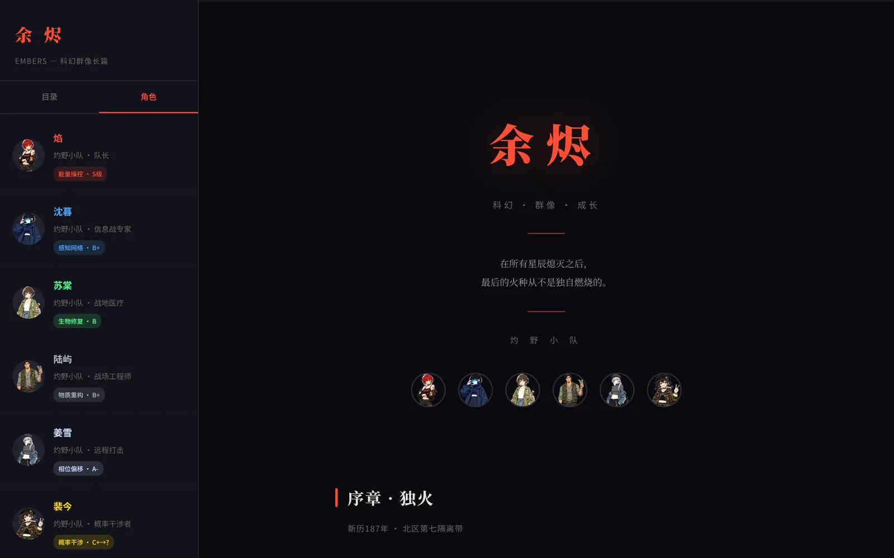
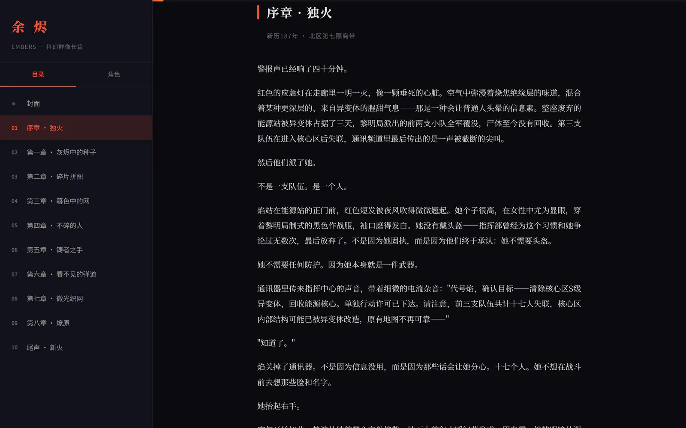

余烬 Embers
一部原创科幻群像长篇，和一个愿意陪人读完它的阅读器。 十章正文，六个角色，每人一张带异能等级的档案卡。

它是什么
一个不试图教你怎么读的阅读器。
群像小说的难点从来不是字数，
是读者在第三章就忘了第一章那个人是谁。
三套视图，一条入口
封面、目录、角色共用左侧栏，切换不丢阅读位置。封面负责「这是什么」， 目录负责「读哪一章」，角色负责「这个人是谁」——三个问题分开回答， 而不是塞进一个长长的落地页。
群像的入口是角色卡
六个角色各占一行：名字、在队里的位置、异能名称与等级。 「灼野小队 · 队长 / 能量操控 · S级」——两行信息就够读者在脑子里给人排座次， 也够他在忘了谁是谁的时候一眼找回来。
长文排版按屏幕重排
正文栏宽 760px、行高 1.9、段间距大于行距，暗色底配低对比正文。 窄屏下自动收窄字号与边距，手机上不会出现一行只有五个字的窘境。 排版的目标只有一个：让人忘记自己在看网页。
进度是一条细线
顶部 3px 进度条，读到哪一目了然，但不占版面。 侧栏高亮当前章节，往下滚的时候不会因为迷路而关掉页面—— 长文产品最常见的流失点，是读者不知道自己还剩多少。
几个判断
阅读器最大的失败，是让人注意到阅读器。
- 小说是主角，界面是配角
- 没有字号调节面板、没有主题切换、没有阅读偏好设置。默认值调好，比给用户十个选项更尊重人。
- 固定侧栏，而不是下拉目录
- 十章加序章尾声，长度刚好一屏能放下。固定住就省掉一次「展开—寻找—收起」， 也让读者随时知道自己在整本书的哪个位置。
- 角色卡只放三行
- 名字、位置、异能。不写性格小传、不写关系图——那些应该在正文里长出来。 卡片是索引，不是设定集。
- 暗色 + 一点红
- 主题色只出现在书名、当前章节和强调词上，正文永远是低对比灰白。 红色在这里不是装饰，是这个世界「正在燃烧」的提示。
界面实拍
封面、角色、正文三个状态。


怎么做的
刻意用一个框架都不用的方式做，为了把加载做到最轻。
整站是一个 HTML 文件加原生 JS，没有构建步骤，没有框架运行时。 首屏只有一个请求，打开就是正文。插图统一转 WebP 并压到原来的十分之一， 在手机上也不用等图。
部署走 GitHub Actions 到 Pages，改完推上去就生效。 字体只用系统衬线，避免中文网络字体那几百 KB 的首屏阻塞。
验收标准：手机 4G 下三秒内出正文；连续读十章，滚动不掉帧；任何一章的排版都不能出现孤字成行。
说明：正文与人物设定为原创内容；插画由 AI 生成并统一调色；排版与交互由我设计。